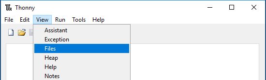

Загрузка библиотек на Pico
В некоторых проектах вам могут потребоваться дополнительные библиотеки. Поэтому сначала загрузим эти библиотеки на Raspberry Pi Pico W, чтобы потом можно было сразу запустить нужный код.
Загрузите соответствующий код по ссылке ниже:
Откройте Thonny IDE, подключите Pico к компьютеру с помощью кабеля micro USB и нажмите на надпись «MicroPython (Raspberry Pi Pico).COMXX» в правом нижнем углу.
В верхнем меню перейдите в View -> Files.
Переключитесь в папку, в которую вы скачали пакет кода, а затем зайдите в каталог
kepler-kit-main/libs.Выделите все файлы или папки в папке
libs/, щёлкните правой кнопкой мыши и выберите Upload to. Загрузка займёт некоторое время.Теперь в разделе
Raspberry Pi Picoвы увидите файлы, которые только что загрузили.